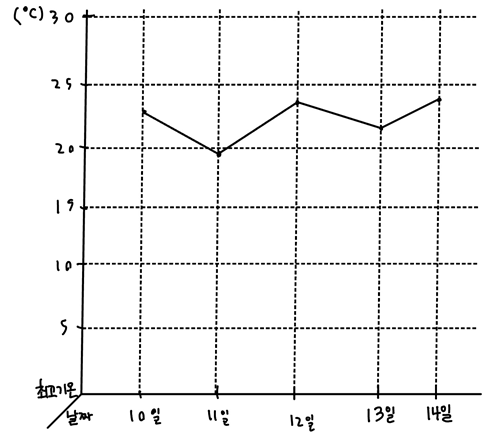
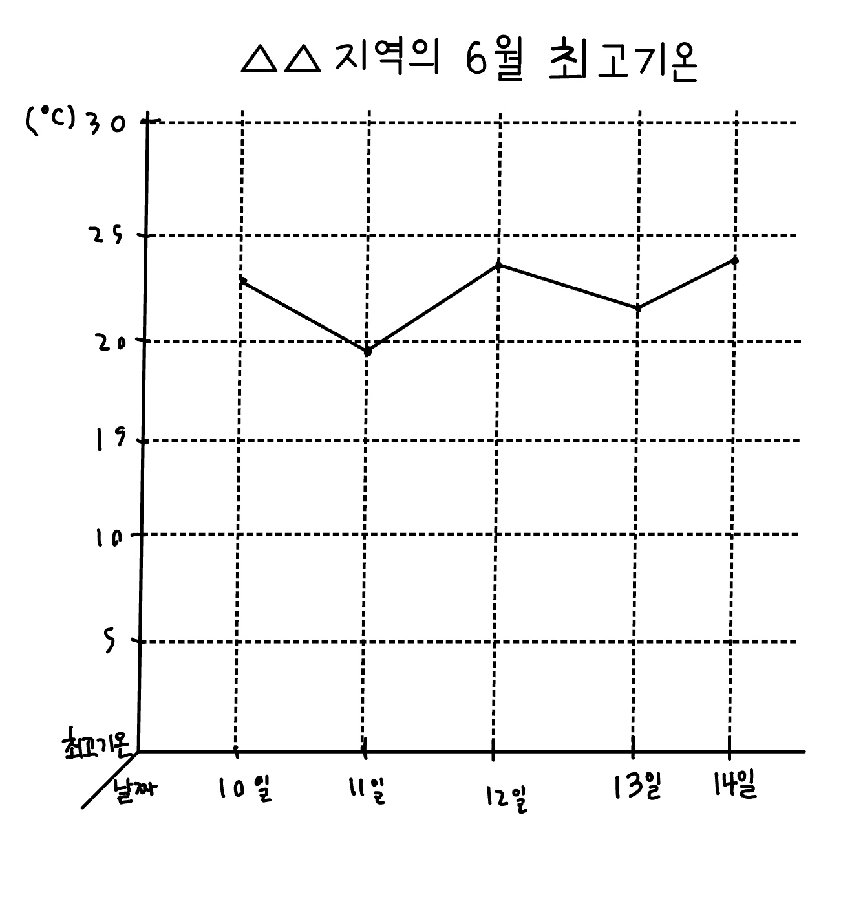

꺾은선 그래프 알아보기
꺾은선 그래프 : 연속적으로 변화하는 양을 점으로 찍고 그 점들을 선분으로 연결하여 나타낸 그래프
가로는 날짜, 세로는 최고기온을 나타냅니다.
막대의 길이를 비교하여 수량의 많고 적음을 비교합니다.
꺾은선 그래프 그리는 방법
- 가로와 세로 눈금을 무엇으로 할지 정합니다.
- 세로 눈금 한 칸의 크기를 정합니다.
- 가로 눈금과 세로 눈금이 만나는 자리에 점을 찍습니다.
- 점들을 선분 으로 연결합니다.
- 꺾은선그래프의 제목을 씁니다.
꺾은선 그래프 해석하기
-어느 도시의 최고 기온 그래프 해석하기
[예상] 15일에는 내려갔다가 16일에는 올라갈 것
[이유] 10일 이후로 계속 내려갔다 올라갔다 기온의 변화가 있었으므로 15일에는 내려갔다가 16일에는 올라갈 것 같습니다.
알맞은 그래프로 나타내기
자료의 양을 비교할 때 : 막대그래프자료의 변화 정도를 알아볼 때 : 꺾은선그래프